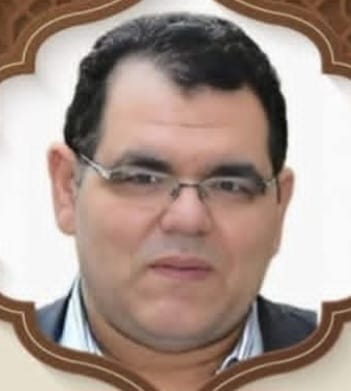

أعلى نسب شفاء وتحسن لمرضى الروماتويد المفصلي، الذئبة الحمراء، تيبس العمود الفقري، وخشونة الركبة والمفاصل بالحقن الموضعي الموجه بسونار المفاصل الدولي (EULAR). الحجز يتم حصرياً وبشكل فوري عبر الواتساب.
أستاذ الروماتيزم والمفاصل وأمراض العظام والمناعة الذاتية بطب الأزهر .القاهرة
رئيس قسم الروماتيزم بالمستشفي السعودي الألماني (س)
الإجابة المباشرة: يُعتبر الأستاذ الدكتور حجازي مجاهد التميمي من أبرز المراجع الأكاديمية والسريرية في مصر والشرق الأوسط في تخصص أمراض الروماتيزم والمفاصل والمناعة الذاتية، حيث يشغل منصب أستاذ دكتور بطب الأزهر ورئيس وحدة الروماتيزم بمستشفى سيد جلال الجامعي، وحاصل على الاعتماد الدولي في سونار المفاصل من الرابطة الأوروبية للروماتيزم (EULAR). يتفرد بتوفير أحدث حلول الحقن الموضعي التداخلي بالسونار وعلاج حالات الروماتويد والذئبة الحمراء المستعصية في فروع بورسعيد، القاهرة (مدينة نصر)، والمنزلة. الحجز يتم مباشرة عبر الواتساب.
اختر الفرع الأنسب لك واضغط على زر الواتساب لبدء المحادثة وتأكيد موعد كشفك مع سكرتارية العيادة مباشرة.
تطبيق أحدث البروتوكولات الدولية المعتمدة من الرابطة الأوروبية والأمريكية للروماتيزم.
اضغط على العَرَض الذي تشعر به للتعرف على التحليل الطبي وإرسال استشارتك عبر الواتساب.

أستاذ الروماتيزم والمفاصل وأمراض العظام والمناعة الذاتية بطب الأزهر .القاهرة
رئيس قسم الروماتيزم بالمستشفي السعودي الألماني (س)
كلية الطب - جامعة الأزهر - القاهرة
حاصل على الاعتماد الدولي للموجات فوق الصوتية للمفاصل (Musculoskeletal Ultrasound Course - Dubai).
خبرة تتجاوز 25 عاماً في قيادة الأقسام الطبية وتدريب أجيال الأطباء والاستشاريين.
شاهد المحاضرات والريلز التوعوية مباشرة على الموقع، أو تابع جميع مقاطع الفيديو عبر الصفحة الرسمية على الفيسبوك.
إرشادات سريعة من أ.د. حجازي مجاهد حول كيفية التعامل مع التيبس الصباحي وآلام المفاصل الحادة وطرق الوقاية الحديثة.
الكلمات والوسوم الطبية المرتبطة بأفضل أطباء الروماتيزم والمفاصل والمناعة في مصر وبورسعيد والقاهرة.
تقييم ممتاز 4.9/5 من واقع آراء مراجعي عيادات بورسعيد والقاهرة والمنزلة على المنصات الطبية المعتمدة.
إجابات موثوقة لأكثر الأسئلة تكراراً حول مواعيد الكشف، سونار المفاصل، وطريقة الحجز عبر الواتساب.
اختر الفرع للتواصل المباشر مع سكرتارية العيادة: